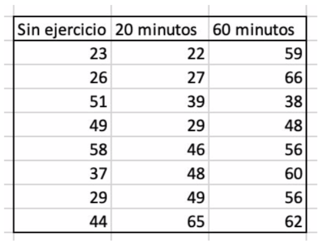

4.7 Métodos de Inferencia Estadística
Vamos a ver las técnicas de Inferencia Estadística más utilizadas en los problemas de relación entre variables. Se pretende que, dado un problema concreto, el alumno sea capaz de identificar el procedimiento estadístico a seguir, aplicarlo e interpretar los resultados. Veremos ejemplos concretos y sencillos para cada uno de los métodos presentados que, evidentemente, no son todos los existentes pero pueden ser suficientes en la gran mayoría de casos.
La siguiente tabla puede servirnos como resumen de los métodos y como guión a seguir durante ste apartadolo. Presentamos el método paramétrico así como su equivalente no paramétrico.
4.7.1 Test de Student para muestras independientes
También conocido como t-test, es posiblemente el más utilizado en Bioestadística. Se utiliza para tratar de determinar si existe una relación significativa entre una variable cualitativa binaria (como, por ejemplo, estar sano o enfermo, ser tratado o no tratado) y una variable numérica (glucemia, presión arterial, etc) . El problema de relación entre ambas variables se traduce en un problema de comparación de las medias poblacionales de la variable numérica, \(\mu_1\) y\(\mu_2\), correspondientes a cada una de las categorías consideradas. Es decir, la hipótesis inicial a contrastar es:
\(H_0:\mu_1=\mu_2\)
Si seleccionamos de manera independiente sendas muestras aleatorias para cada categoría,el algoritmo al que se someten los datos se denomina test de Student para muestras independientes.
A pesar de la sencillez y utilidad del t-test, para que sus resultados sean válidos es necesario que se cumplan una serie de condiciones, entre las que se encuentran:
Independencia: Las observaciones tienen que ser independientes las unas de las otras. Para ello, el muestreo debe ser aleatorio y el tamaño de la muestra inferior al 10% de la población.
Normalidad: Las poblaciones que se comparan tienen que seguir una distribución normal. Si bien la condición de normalidad recae sobre las poblaciones, no se suele disponer de información sobre ellas, por lo que se emplean las muestras (dado que son reflejo de la población) para determinarlo. En caso de cierta asimetría, los t-test son considerablemente robustos si el tamaño de las muestras es mayor o igual a 30.
Igualdad de varianza (homocedasticidad): la varianza de las poblaciones comparadas debe de ser igual. Tal como ocurre con la condición de normalidad, si no se dispone de información de las poblaciones, esta condición se ha de asumir a partir de las muestras.
En caso de no cumplirse esta condición se puede emplear otra prueba como un Welch Two Sample t-test, que incorpora una corrección a través de los grados de libertad que compensa la diferencia de varianzas, con el inconveniente de que pierde poder estadístico.
Consideramos el siguiente ejemplo con 2 pares de muestras (A1, B1) y (A2, B2). Representadas mediante diagramas de cajas y bigotes:
Observamos que en el primer ejemplo con las variables A1, B1, no se observa diferencia significativa entre ambas mientras que en el segundo ejemplo con los datos A2, B2, al menos por término medio (y mediano), parece que hay diferencia. Vamos analizar si esa diferencia apreciada en la segunda muestra concreta es significativa.
Inicialmente, supondremos que ambas variables no guardan relación (\(\mu_A\) = \(\mu_b\)) y evaluaremos si la muestra estudiada contradice claramente dicha suposición.
Según el modelo inicial las medias muestrales \(\overline{x}_A\) y \(\overline{x}_B\) deberían ser parecidas, es decir, la diferencia (en bruto) \(\overline{x}_A\) - \(\overline{x}_B\) debería ser prácticamente nula (~ 0).
Obviamente, no podemos exigir que sea exactamente igual a 0 porque debemos asumir diferencias entre las muestras debidas exclusivamente al azar inherente al muestreo. El problema es cuantificar qué estamos dispuestos a achacar al azar, lo cual es un problema de Cálculo de Probabilidades. Para ello elegimos el estadístico de contraste. Concretamente, según el modelo inicial, la diferencia de medias muestrales debería seguir un modelo de distribución normal de media 0,de manera que, al tipificarlo, la diferencia de medias muestrales debería seguir una distribución N(0,1).
De esta forma, obtenemos el valor del estadístico de contraste \(t_{exp}\) como:
\(t_{exp}=\frac{\overline{x}_A- \overline{x}_B}{\sqrt{\frac{\sigma_A^2}{n_A}+\frac{\sigma_B^2}{n_B}}}\)
Este valor recoge toda la información que aporta la muestra estudiada en lo referente a la hiopótesis nula del contraste de la hipótesis
\(H_0: \mu_1=\mu_2\)
De hecho, su valor absoluto se entiende como una distancia (tipificada) entre las dos medias muestrales que, bajo la hipótesis \(H_0: \mu_1=\mu_2\), debería ser pequeña. Más concretamente, debería ajustarse a un modelo de distribución N(0,1).
El valor p se define en este problema concreto como la probabilidad, según N(0,1), de obtener una distancia (tipificada) entre medias aritméticas al menos tan grande como la observada en la muestra. En otras palabras, el valor p es el área de las colas (contraste bilateral) que determinan | $t_{exp}| y -| $t_{exp}|
lo cual expresa en qué medida es verosímil la muestra según \(H_0\).
En nuestros ejemplos, obtenemos el valor del estadístico de contraste y el valor p asociado:
Así, para A2, B2, el resultado es significativo (valor p < 0,05), es decir, se opta por la hipótesis alternativa \(H_1:\mu_{A2} \neq \mu_{B2}\) son distintas como habíamos intuído a la vista de los diagramas de cajas y bigotes.
Sin embargo, para A1, B1, el valor \(t_{exp}\) indica una escasa diferencia entre las medias muestrales, sería verosímil desde el punto de vista de la hipótesis inicial \(H_0:\mu_{A1=\mu_{B1}}\) asociándose a un valor p alto (0,2898 > 0,05) según la distribución N(0,1). Se entendería entonces que la muestra es compatible con la hipótesis inicial y, en definitiva, no hay diferencia entre las medias.
Con la hoja de cálculo Excel® tenemos los resultados de la prueba que nos da el valor del estadístico t y el valor p así como el valor crítico de t tanto para una cola como para dos colas para una confianza del 95%. En nuestro caso, hemos supuesto que el contraste es bilateral (\(H_0:\mu_1=\mu_2\)) por lo que tenemos que mirar el resultado para dos colas.
4.7.2 t-test (Práctica)
Para realizar esta práctica, debe tener descargado en su ordenador el archivo 3.practicas.xlsx y abrir la hoja/pestaña correspondiente.
En el siguente vídeo se muestran los pasos para realizar la práctica.
4.7.3 Prueba de Mann-Whitney
Es una alternativa no paramétrica al test de Student que no exige la normalidad de la variable estudiada y que es, por lo tanto, de especial utilidad con muestras pequeñas. Se conoce también como la prueba de la suma de rangos de Wilcoxon (Wilcoxon Sum Rank Test). Básicamente consiste en una comparación de los rangos o posiciones promedios de la variable numérica en función de las categorías consideradas. En este caso, se utiliza la mediana en vez de la media.
Se establece como hipótesis nula que las dos muestras son iguales.
La idea en la que se fundamenta este test es la siguiente: si las dos muestras comparadas proceden de la misma población, al juntar todas las observaciones y ordenarlas de menor a mayor, cabría esperar que las observaciones de una y otra muestra estuviesen intercaladas aleatoriamente. Por lo contrario, si una de las muestras pertenece a una población con valores mayores o menores que la otra población, al ordenar las observaciones, estas tenderán a agruparse de modo que las de una muestra queden por encima de las de la otra.
Consideremos como ejemplo un ensayo clínico de Fase II diseñado para investigar la efectividad de un nuevo medicamento para reducir los síntomas del asma en niños. Un total de n = 10 participantes se asignaron al azar para recibir el nuevo medicamento o un placebo. Se les pide a los participantes que registren la cantidad de episodios de falta de aliento durante un período de 1 semana después de recibir el tratamiento asignado. Los datos se muestran a continuación.
¿Hay alguna diferencia en el número de episodios de falta de aliento durante un período de 1 semana en los participantes que reciben el nuevo medicamento en comparación con los que recibieron el placebo?
A la vista de los datos, parece que los participantes que reciben el placebo tienen más episodios de dificultad respiratoria, pero ¿es esto estadísticamente significativo?
En este ejemplo, el resultado es un recuento y en esta muestra los datos no siguen una distribución normal. Además, el tamaño de la muestra es pequeño (\(n_1\) = \(n_2\) = 5) por lo que es apropiado usar una prueba no paramétrica.
Establecemos como hipótesis nula
\(H_0\) las dos muestras son iguales
y un nivel de confianza del 95% (es decir, \(\alpha\) = 0.05).
Si la hipótesis nula es cierta (es decir, las dos poblaciones son iguales), esperamos ver un número similar de episodios de dificultad respiratoria en cada uno de los dos grupos de tratamiento y esperaríamos ver algunos participantes con pocos episodios y otros con más episodios en cada grupo. Este no parece ser el caso con los datos observados. Se necesita una prueba de hipótesis para determinar si los datos observados son evidencia de una diferencia estadísticamente significativa en las poblaciones . El primer paso es asignar rangos y para ello ordenamos los datos de menor a mayor. Esto se hace en la muestra total o combinada (es decir, agrupando los datos de los dos grupos de tratamiento (n = 10)), y asignando rangos de 1 a 10, de la siguiente manera:
El rango 4.5 se corresponde al valor 4 de los 2 grupos. Serían los rangos 4 y 5 pero, al ser iguales, se toma como rango 4.5. Análogamente sucede con los rangos 7 y 8.
Vemos que los rangos inferiores (por ejemplo, 1, 2 y 3) se asignan a las respuestas en el nuevo grupo de medicamentos, mientras que los rangos más altos (por ejemplo, 9, 10) se asignan alas respuestas en el grupo de placebo. El objetivo de la prueba es determinar si los datos observados apoyan una diferencia en las poblaciones de respuestas.
En las pruebas paramétricas (analizadas en los módulos sobre pruebas de hipótesis), al comparar las medias entre dos grupos, analizamos la diferencia en las medias de la muestra en relación con su variabilidad y resumimos la información de la muestra en un estadístico de prueba. Un enfoque similar se emplea aquí. Específicamente, producimos una prueba basada en los rangos.
Primero, sumamos los rangos de cada grupo. Para el placebo, obtenemos una suma de 37 mientras que para el nuevo medicamento, obtenemos una suma de rangos de 18. Como notación, llamamos 1 al grupo del placebo y 2 al grupo del nuevo medicamento. De este modo, si llamamos \(R_1\) a la suma de rangos del grupo 1 (placebo) y \(R_2\) a la suma de rangos del grupo 2 (nuevo medicamento), tenemos que \(R_1\) = 37 y \(R_2\) = 18.
Si la hipótesis nula fuese cierta ( las dos muestras son iguales), esperamos valores similares de \(R_1\) y \(R_2\).
En este ejemplo, los valores más bajos (rangos inferiores) se agrupan en el nuevo grupo de nuevo medicamento (grupo 2), mientras que los valores más altos (rangos más altos) se agrupan en el grupo de placebo (grupo 1). Sin embargo, ¿es la diferencia observada en las sumas de los rangos simplemente debido al azar?
Para responder esto, vamos a calcular un estadístico de prueba para resumir la información de la muestra y buscar el valor correspondiente en una distribución de probabilidad.
El estadístico de contraste para la prueba de Mann-Whitney se denota como U y es el valor más pequeño entre \(U_!\) y \(U_2\) definidos como:
\(U_1=n_1\cdot n_2+\frac{n_1(n_1+1)}{2}-R_1\)
\(U_2=n_1\cdot n_2+\frac{n_2(n_2+1)}{2}-R_1\)
En nuestro ejemplo:
\(U_1=5\cdot 5+\frac{5\cdot6}{2}-37= 40 - 37 = 3\)
\(U_2=5\cdot 5+\frac{5\cdot6}{2}-18 = 40-18=22\)
El valor del estadístico de contraste U es el menor de esos valores, es decir U = 3.
¿Es esta evidencia en apoyo de la hipótesis nula? Antes de abordar esta pregunta, consideramos el rango del estadístico de prueba U en dos casos extremos.
Los dos grupos son diferentes
En este caso, suponemos que los grupos son completamente diferentes. En nuestro ejemplo, esto implica que los 5 primeros rangos corresponden a un grupo y los otros 5 al otro, es decir, si todos los números más altos de episodios de dificultad respiratoria (y, por lo tanto, todos los rangos más altos) están en el grupo de placebo, y todos los números más bajos de episodios (y rangos) están en el nuevo grupo de fármacos, entonces:
\(R_1= 6 + 7 + 8 + 9 + 10 = 40\) y \(R_2= 1 + 2 + 3 + 4 + 5 = 15\) .
de donde \(U_1= 40-40 =0\) y \(U_2=40-15=25\).
Así U, el menor de esos valores, es 0 cuando hay una diferencia clara entre grupos.
Los dos grupos son iguales
El otro caso extremo es considerar que los grupos son exactamente iguales. Así, en nuestro ejemplo, si los rangos de 2, 4, 6, 8 y 10 se asignan a la cantidad de episodios de dificultad respiratoria en el grupo de placebo y los rangos de 1, 3, 5, 7 y 9 se asignan a la cantidad de episodios de insuficiencia en el grupo de nuevo medicamento, entonces:
\(R_1= 2 + 4 + 6 + 8 + 10 = 30\) y \(R_2= 1 + 3 + 5 + 7 + 9 = 25\) .
de donde \(U_1=40-30=10\) y \(U_2=40-25=15\).
Así U sería 10 cuando no hay una diferencia clara entre grupos.
Si tenemos en cuenta que en cada prueba, \(U_1\) + \(U_2\) es siempre igual a n1 · n2, en el ejemplo anterior, U puede variar de 0 a 25 y valores más pequeños de U apoyan la hipótesis alternativa (es decir, rechazamos H0 si U es pequeña). El procedimiento para determinar exactamente cuándo rechazar H0 se describe a continuación.
El valor crítico de U se puede encontrar en la siguiente tabla:
Para determinar el valor crítico, necesitamos los tamaños de muestra (\(n_1\) = \(m_2\) = 5) y nuestro nivel de significancia bilateral \(\alpha\) = 0.05 (la tabla da los valores críticos para 0.05 y 0.01).
En nuestro caso, el valor crítico que nos da la tabla es 2 y la regla de decisión es rechazar $H_0$0 si U < 2.
Nosotros habíamos obtenido un valor U = 3 por lo que no rechazamos \(H_0\) ya que 3 > 2.
También podemos calcular el valor p con la aplicación web https://homepage.divms.uiowa.edu/~mbognar/applets/mw.html:
Obtenemos un valor p = 0,02778 que es mayor, por muy poco, que 0,025 (es un contraste bilateral, de 2 colas). De este modo, no tenemos pruebas estadísticamente significativas a \(\alpha\) = 0.05 para mostrar que las dos poblaciones de episodios de dificultad respiratoria son distintos. Sin embargo, en este ejemplo, el hecho de no alcanzar una significación estadística puede deberse a una baja potencia. Los datos de la muestra sugieren una diferencia pero los tamaños de la muestra son demasiado pequeños para concluir que existe una diferencia estadísticamente significativa.
Para realizar esta práctica, debe tener descargado en su ordenador el archivo 3.practicas.xlsx y abrir la hoja/pestaña correspondiente.
En el siguente vídeo, además de la explicaciones teóricas, se muestran los pasos para realizar la práctica.
4.7.4 Anova de un factor
Este test es una generalización del test de Student para dos muestras independientes que se aplica para un mismo tipo de estudio y de diseño, con la salvedad de que podemos distinguir un número de categorías y, por lo tanto, de medias, mayor de dos.
El test que resuelve el contraste se denomina anova de una vía o factor (analisis of variance i. e. análisis de la varianza) y requiere en principio de las mismas condiciones de validez que el test de Student para dos muestras independientes, es decir;
- Las muestras aleatorias elegidas deben ser independientes. Además, dentro de cada tratamiento, las observaciones son independientes entre sí.
- Las observaciones proceden de poblaciones normales de modo que las variables correspondientes al mismo tratamiento tienen la misma media.
- Hipotesis de homocedasticidad: cada población tiene la misma varianza
La prueba Anova es una prueba de hipótesis que es apropiada para comparar medias de una variable continua en dos o más grupos de comparación independientes. Por ejemplo, en algunos ensayos clínicos hay más de dos grupos de comparación. En un ensayo clínico para evaluar un nuevo medicamento para el asma, los investigadores podrían comparar un medicamento experimental con un placebo y con un tratamiento estándar (es decir, un medicamento que se esté usando actualmente). En un estudio observacional como el estudio del corazón de Framingham, podría ser interesante comparar la presión arterial media o los niveles medios de colesterol en personas con bajo peso, peso normal, sobrepeso y obesidad.
Vamos a considerar un ejemplo con grupos independientes y una medida de resultado continua. Los grupos independientes pueden definirse por una característica particular de los participantes, como el IMC (p. ej., Bajo peso, peso normal, sobrepeso, obesidad) o por el investigador (p. ej., Asignación aleatoria de participantes a uno de los cuatro tratamientos A, B, C y D). Supongamos que el resultado es la presión arterial sistólica y queremos comprobar si existe una diferencia estadísticamente significativa en la presión arterial sistólica media entre los cuatro grupos. Los datos de muestra se organizan de la siguiente manera:
Las hipótesis son:
\(H_0:\mu_1 = \mu_2 = ... = \mu_k\)
\(H_1\): las medias no son iguales
Al aplicar ANOVA de un factor se calcula un estadístico de contraste denominado F. El estadístico F o F-test (se llama F en honor al estadístico Ronald Fisher) se obtiene al estimar la variación de las medias entre los grupos de la variable independiente y dividirla por la estimación de la variación de las medias dentro de los grupos. Así, si
- N es el número total de observaciones
- \(\overline{x}\) es la media de todos los datos
- \(\overline{x_i}\) es la media del grupo i = 1, 2, …, k
El estadístico F se obtiene como:
\(F=\frac{\frac{\sum n_j(\overline{x}_j-\overline{x})^2}{k-1}}{\frac{\sum\sum(x_i-\overline{x}_j)^2}{N-k}}\)
El cálculo del estadístico F divide la variación entre los grupos por la variación dentro de los grupos. Si las medias entre los grupos varían mucho y la media dentro de un grupo varía poco, es decir, los grupos son heterogéneos entre ellos y similares internamente, el valor de F será más alto, y por tanto, las variables estarán relacionadas. El estadístico F se distribuye según el modelo de probabilidad F de Snedecor siendo los grados de libertad del numerador el número de grupos menos 1 y los del denominador, el número total de observaciones menos el número de grupos).
En conclusión, cuanto más difieren las medias de la variable dependiente entre los grupos de la variable independiente, más alto será el valor de F. Si hacemos varios análisis de ANOVA de un factor, aquel con F más alto indicará que hay más diferencias y por tanto una relación más fuerte entre las variables.
Vamos a considerar el siguiente ejemplo: se realiza un ensayo clínico para comparar programas de pérdida de peso y los participantes se asignan al azar a uno de los programas de comparación y los participantes siguen el programa asignado durante 8 semanas. El resultado de interés es la pérdida de peso, definida como la diferencia en el peso medido al inicio del estudio (línea de base) y el peso medido al final del estudio (8 semanas), medido en kilogramos. Las diferencias positivas indican pérdidas de peso y las negativas indican ganancias de peso.
Suponemos que las muestras elegidas son independientes y dentro de cada tratamiento, las observaciones son independientes entre sí, que las observaciones proceden de poblaciones normales y que cada población tiene la misma varianza.
Con la hoja de cálculo, hacemos el Análisis de varianza de un factor obteniendo los siguientes resultados:
Obtenemos pues un valor del estadístico de contraste F = 8,56 siendo el valor crítico 3,24 para α = 0,05. Además, nos indica un valor p de 0,001277742.
Entonces rechazamos \(H_0\) porque 8,56 > 3.24 (o porque 0,001 < 0,05), es decir, tenemos pruebas estadísticamente significativas con una confianza del 95% (\(\alpha\)= 0.05) para concluir que existe una diferencia en la pérdida de peso promedio entre las cuatro dietas.
Para realizar esta práctica, debe tener descargado en su ordenador el archivo 3.practicas.xlsx y abrir la hoja/pestaña correspondiente.
En el siguente vídeo, además de la explicaciones teóricas, se muestran los pasos para realizar la práctica.
4.7.5 Prueba de Kruskal-Wallis
Hemos visto técnicas para probar la igualdad de medias en más de dos muestras independientes utilizando análisis de varianza (ANOVA).
Un supuesto subyacente para el uso apropiado de ANOVA es que el resultado continuo se distribuye aproximadamente de manera normal o que las muestras eran suficientemente grandes (generalmente \(n_j\) > 30, donde j = 1, 2, …, k y k denota el número de grupos).
Un supuesto adicional para el uso apropiado de ANOVA es la igualdad de varianzas en los k grupos de comparación. ANOVA es generalmente robusto cuando los tamaños de muestra son pequeños pero iguales. Cuando el resultado no se distribuye normalmente y las muestras son pequeñas, una prueba no paramétrica es apropiada.
Una prueba no paramétrica popular para comparar resultados entre más de dos grupos independientes es la prueba de Kruskal Wallis. La prueba de Kruskal Wallis se usa para comparar medianas entre k grupos de comparación (k> 2) y algunas veces se describe como un ANOVA con los datos reemplazados por sus rangos. Las hipótesis nula y de investigación para la prueba no paramétrica de Kruskal Wallis se exponen a continuación:
\(H_0\): Las k medianas de la población son iguales
\(H_1\): Las k medianas de población no son todas iguales
El procedimiento para la prueba implica agrupar las observaciones de las k muestras en una muestra combinada, hacer un seguimiento de la muestra de cada observación y luego clasificar de 1 a N, con N = \(n_1\), \(n_2\), … , \(n_k\). Para ilustrar el procedimiento, vamos a considerar el siguiente ejemplo:
Un estudio clínico está diseñado para evaluar las diferencias en los niveles de albúmina en adultos que siguen dietas con diferentes cantidades de proteínas. Las dietas bajas en proteínas a menudo se prescriben para pacientes con insuficiencia renal. La albúmina es la proteína más abundante en la sangre y su concentración en el suero se mide en gramos por decilitro (g / dL). Clínicamente, las concentraciones de albúmina sérica también se utilizan para evaluar si los pacientes obtienen suficiente proteína en sus dietas. Se comparan tres dietas, que varían de 5% a 15% de proteínas, y la dieta de 15% de proteínas representa una dieta típica estadounidense. Los niveles de albúmina de los participantes después de cada dieta se muestran a continuación.
Parece que que hay una diferencia en los niveles de albúmina sérica entre los sujetos en las tres dietas diferentes. Como referencia, los niveles normales de albúmina están generalmente entre 3.4 y 5.4 g / dL. A simple vista, parece que los participantes que siguen la dieta con 15% de proteínas tienen niveles de albúmina más altos que los que siguen la dieta con 5% de proteínas. El problema es comprobar si esta diferencia observada es estadísticamente significativa.
En este ejemplo, la variable es cuantitativa continua, pero los tamaños de muestra son pequeños y no son iguales entre los grupos de comparación (\(n_1\) = 3, \(n_2\) = 5, \(n_3\) = 4). Por lo tanto, una prueba no paramétrica es apropiada. Las hipótesis que se van a probar se dan a continuación y tomaremos un nivel de significación del 5% (\(\alpha\) = 0.05).
\(H_0\): las medianas de los grupos son iguales
\(H_1\): al menos uno de los grupos tiene mediana distinta a las otras
Para realizar la prueba, primero ordenamos los datos en la muestra total combinada de 12 sujetos, de menor a mayor y asignar los rangos correspondientes:
Se observa que los rangos más bajos (por ejemplo, 1, 2.5, 4) se asignan al grupo de dieta con 5% de proteínas, mientras que los rangos más altos (por ejemplo, 10, 11 y 12) se asignan al grupo de dieta con 15% de proteínas.
Nuevamente, el objetivo de la prueba es determinar si los datos observados apoyan una diferencia en las tres medianas de la población. Recuerde que en las pruebas paramétricas cuando comparamos medias entre más de dos grupos, analizamos la diferencia entre las medias muestrales (media cuadrada entre grupos) en relación con su variabilidad dentro del grupo y resumimos la información de la muestra en una prueba estadística (estadística F). En la prueba de Kruskal Wallis, nuevamente resumimos la información de la muestra en una estadística de prueba basada en los rangos.
El estadístico de prueba para la prueba de Kruskal Wallis se denota H y se define como sigue:
\(H=\left( \frac{12}{N(N+1)}\sum_{j=1}^k \frac{R_j^2}{n_j}\right) -3(N+1)\)
donde k es el número de grupos de comparación, N el tamaño total de la muestra, \(n_j\) es el tamaño de la muestra en el grupo j y Rj es la suma de los rangos en el grupo j.
En este ejemplo, \(R_1\) = 7.5, \(R_2\) = 30.5 y \(R_3\) = 40. Recuerde que la suma de los rangos siempre será igual a \(\frac{n(n-1)}{2}\).
El estadístico H para este ejemplo se calcula de la siguiente manera:
\(H=\left( \frac{12}{N(N+1)}\sum_{j=1}^k \frac{R_j^2}{n_j}\right) -3(N+1)= \frac{12}{12\cdot 13}\left( \frac{7,5^2}{3}+\frac{30,5^2}{5}+\frac{40^2}{4}\right) -3(13)=7.52\)
Ahora debemos determinar si el estadístico de prueba obtenido H respalda la hipótesis nula o de investigación. Una vez más, esto se hace estableciendo un valor crítico de H.
Si el valor observado de H es mayor o igual al valor crítico, rechazamos \(H_0\) a favor de \(H_1\).
Si el valor observado de H es menor que el valor crítico, no rechazamos \(H_0\)
El valor crítico de H se puede encontrar en la siguiente tabla:
Para determinar el valor crítico apropiado, al tener 3 observaciones con tamaños de muestra \(n_1\) = 3, \(n_2\) = 5 y \(n_3\)= 4 con un nivel de significación \(\alpha\) = 0.05, buscamos en la fila 5, 4, 3 y la columna \(\alpha\) = 0.05. Para este ejemplo, el valor crítico es 5,656.
Por lo tanto rechazamos \(H_0\) porque 7,52 > 5,656 y concluimos que al menos uno de los grupos tiene mediana distinta a las otras entre las tres dietas diferentes.
Hay que tener en cuenta que la tabla contiene valores críticos para la prueba de Kruskal Wallis para pruebas que comparan 3, 4 o 5 grupos con tamaños de muestra pequeños. Si hay 3 o más grupos de comparación y 5 o más observaciones en cada uno de los grupos de comparación, se puede mostrar que el estadístico de prueba H se aproxima a una distribución chi-cuadrado con el número de grados de libertad df = k - 1.
Por lo tanto, en una prueba de Kruskal Wallis con 3 o más grupos de comparación y 5 o más observaciones en cada grupo, el valor crítico para la prueba se puede encontrar en la tabla de Valores críticos de la distribución \(\chi^2\) a continuación.
Vamos a verlo con otro ejemplo
¿El ejercicio físico alivia la depresión? Realizamos un estudio con un grupo de personas deprimidas de manera equivalente. Luego asignamos a cada persona al azar a uno de tres grupos: sin ejercicio; 20 minutos de ejercicio físico por día o 60 minutos de ejercicio por día. Al final de un mes, le pedimos a cada participante que califique su grado de depresión en una escala Likert que va desde 1 (totalmente deprimido) hasta 100 (totalmente feliz) obteniendo los siguientes resultados:

Parece que hay diferencias entre los 3 grupos:
Para comprobar si hay diferencias estadísticamente significativas (α = 0.05), aplicamos la prueba de Kruskal-Wallis. Las hipótesis nula y de investigación para la prueba no paramétrica de Kruskal Wallis son:
\(H_0\): las medianas de los grupos son iguales
\(H_1\): al menos uno de los grupos tiene mediana distinta a las otras
Establecemos el rango para cada medición:
El estadístico de prueba para la prueba de Kruskal Wallis es:
\(H=\left( \frac{12}{N(N+1)}\sum_{j=1}^k \frac{R_j^2}{n_j}\right) -3(N+1)\)
En este ejemplo, \(R_1\) = 77, \(R_2\) = 80.5 y \(R_3\) = 142,5 con 8 datos en cada grupo para un total de 24. Así, haciendo los cálculos, obtenemos:
\(H=\left( \frac{12}{N(N+1)}\sum_{j=1}^k \frac{R_j^2}{n_j}\right) -3(N+1)= \frac{24}{24\cdot 25}\left( \frac{77^2}{8}+\frac{80,5^2}{8}+\frac{142,5^2}{8}\right) -3(25)=6,78875\)
Como hemos comentado, en este segundo ejemplo usamos la tabla de la chi-cuadrado. Tenemos que los grados de libertad son igual al número de grupos menos uno, es decir 3 -1 = 2 grados de libertad (df).
Entonces, en la tabla de la \(\chi^2\) buscamos el valor crítico para 2 grados de libertad con un nivel de significación \(\alpha\) = 0.05 obteniendo un valor \(\chi^2_{.0.05}\) = 5,991.
Comenzamos comparando nuestro H de 6,79 con 5.99. Con 2 grados de libertad, es probable que un valor de Chi-cuadrado tan grande como 5.99 ocurra por casualidad solo 5 veces en cien, es decir, tiene una p de 0,05. Nuestro valor obtenido de 6,79 es incluso mayor que esto, por lo que esto nos dice que nuestro valor de H es incluso menos probable que ocurra por casualidad. Nuestra H ocurrirá por casualidad con una probabilidad de menos de 0,05.
Así, podemos concluir que la prueba de Kruskal-Wallis indica que hay un efecto significativo del ejercicio en los niveles de depresión (H = 6,79, p < 0,05). Las medias de cada grupo sugieren que, en comparación con el grupo de control “sin ejercicio”, la depresión se redujo significativamente con 60 minutos de ejercicio diario, pero no con 20 minutos de ejercicio. Hay que tener en cuenta que una puntuación más alta en este estudio equivale a un nivel de ánimo más alto y, por lo tanto, un nivel de depresión más bajo).
Sin utilizar la tabla, podríamos haber obtenido el valor p correspondiente a 6,79 con 2 grados de libertad utilizando la hoja de cálculo o la aplicación web:
4.7.6 t-test emparejadas (Práctica)
Para realizar esta práctica, debe tener descargado en su ordenador el archivo 3.practicas.xlsx y abrir la hoja/pestaña correspondiente.
En el siguente vídeo, además de la explicaciones teóricas, se muestran los pasos para realizar la práctica.